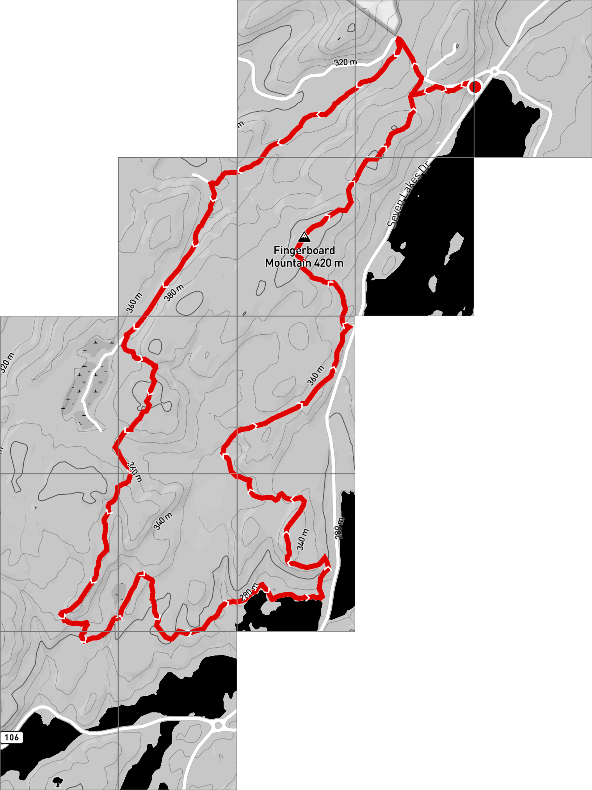
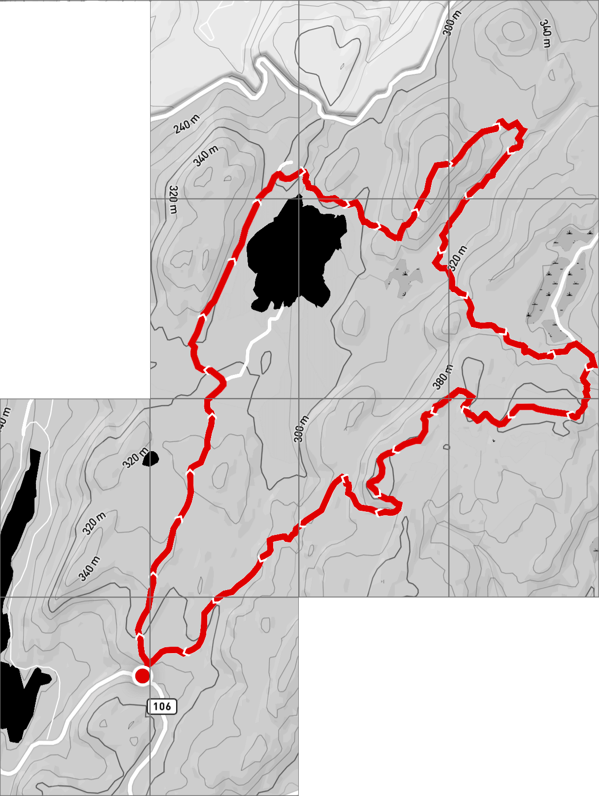
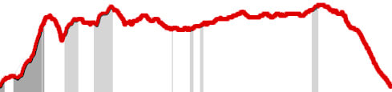
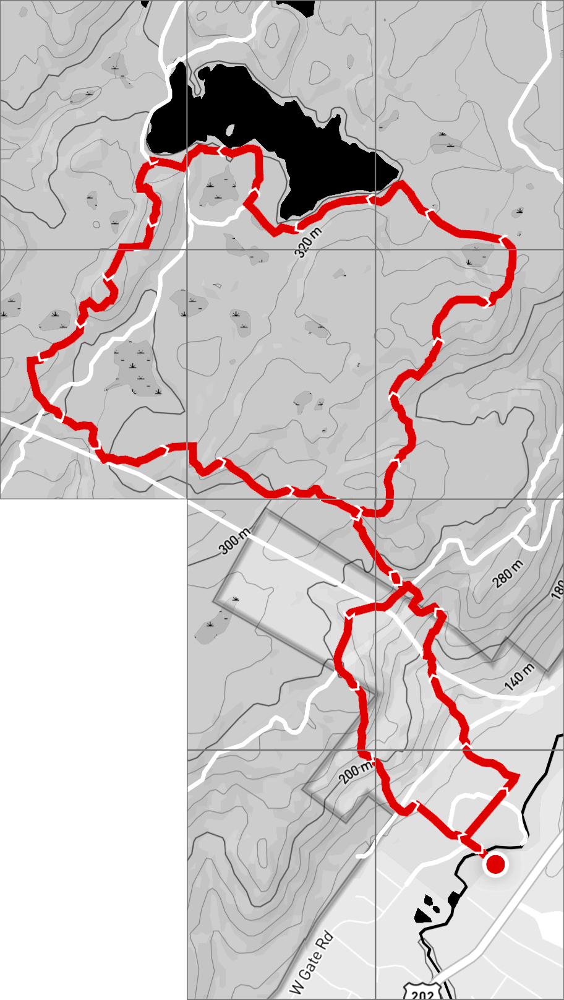
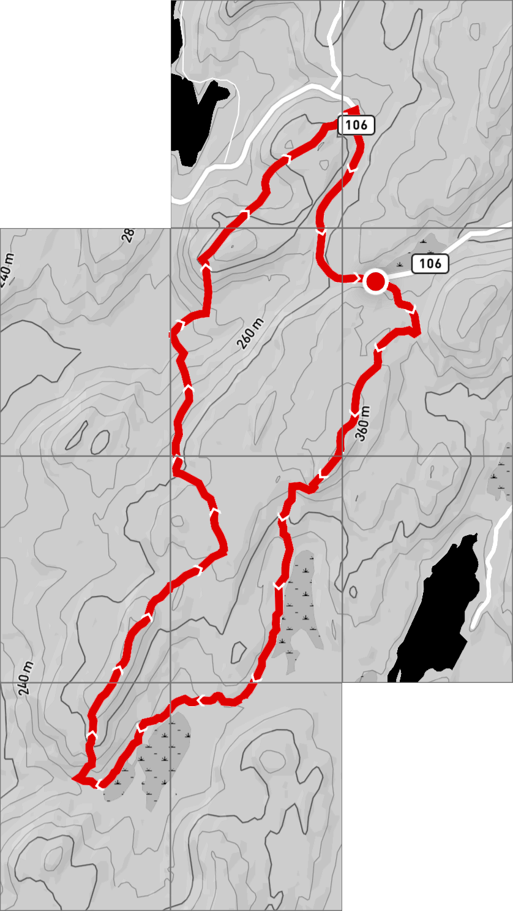
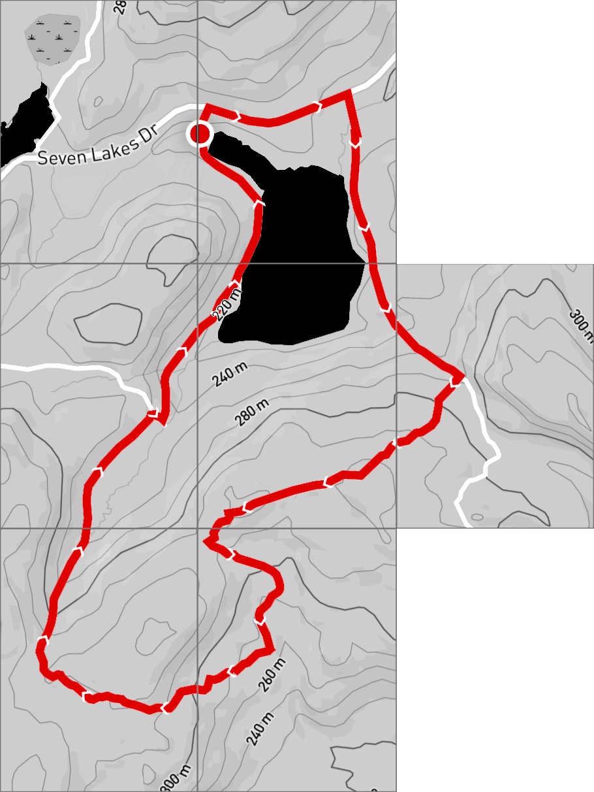
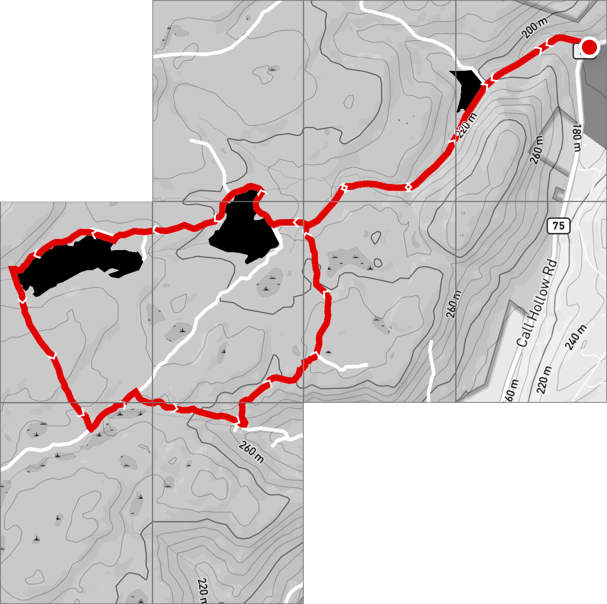
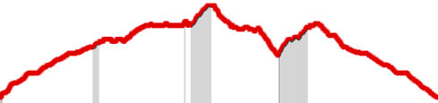
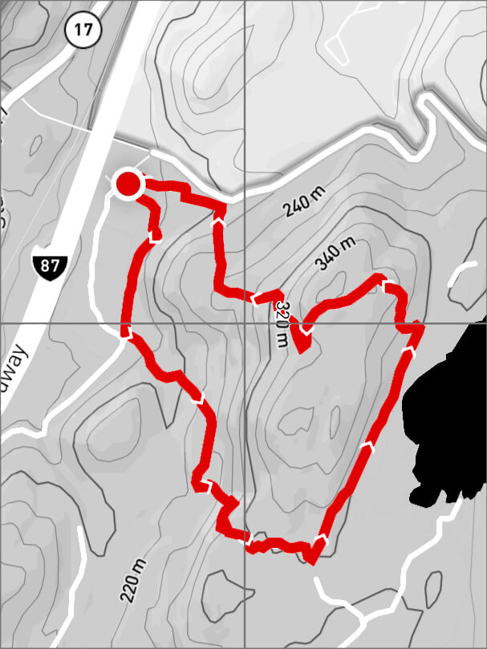

West Mountain
41.280, -73.963
distance
15.9 km
gain
235 m
loss
231 m

Fingerboard Mountain
41.274, -74.08
distance
15.8 km
elevation
476 m

Lemon Squeezer
41.236, -74.150
distance
12.16 km
gain
98 m
loss
105 m

Diamond Mountain
41.198, -74.130
distance
10.64 km
gain
82 m
loss
83 m

Breakneck Mountain
41.185, -74.074
distance
13.18 km
gain
134 m
loss
129 m

Diamond Mountain
41.185, -74.074
distance
12.92 km
gain
136 m
loss
134 m


Racoon Brooke Hill
41.145, -74.113
distance
11.95 km
gain
149 m
loss
152 m


Black Ash Swamp
41.227, -74.147
distance
9 km
gain
110 m
loss
112 m

Doodletown
41.301, -73.986
distance
7.92 km
gain
107 m
loss
103 m

Bailey Town
41.295, -74.059
distance
8.06 km
gain
55 m
loss
58 m

Silver Mine Loop
41.295, -74.059
distance
8.15 km
gain
77 m
loss
60 m

Cranberry Hill
41.316, -74.053
distance
7.42 km
gain
67 m
loss
63 m

Three Reservoirs
41.218, -74.050
distance
9.6 km
gain
92 m
loss
91 m

